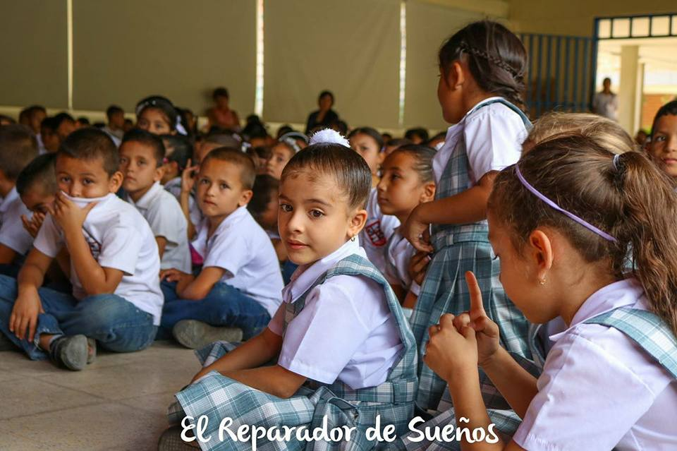
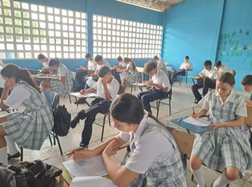

Historia sobre nuestra institución
A raíz de la historia por el cual fue elegido nuestro nombre de la institución fue por la injusticia detras de toda la historia de Juana De Arco. Donde queremos dar una igualdad, una buena calidad, credibilidad, buen camino a cada uno de nuestros queridos estudiantes, contando que nuestro primer año, donde renació nuestra institución fue todo un exito donde los padres nos confiaron desde sus chiquitines hasta sus muchachos.
Nos importan todos y cada uno, ya sea que comience su enseñanza, que vaya comenzando su aprendizaje y desarrollando su mente, hasta que vaya culminando su linda etapa, donde vayamos terminando de afinar detalles, viendo, preparando y visualizando un futuro para los estudiantes que por fin abriran sus alas empezando su camino profesional
